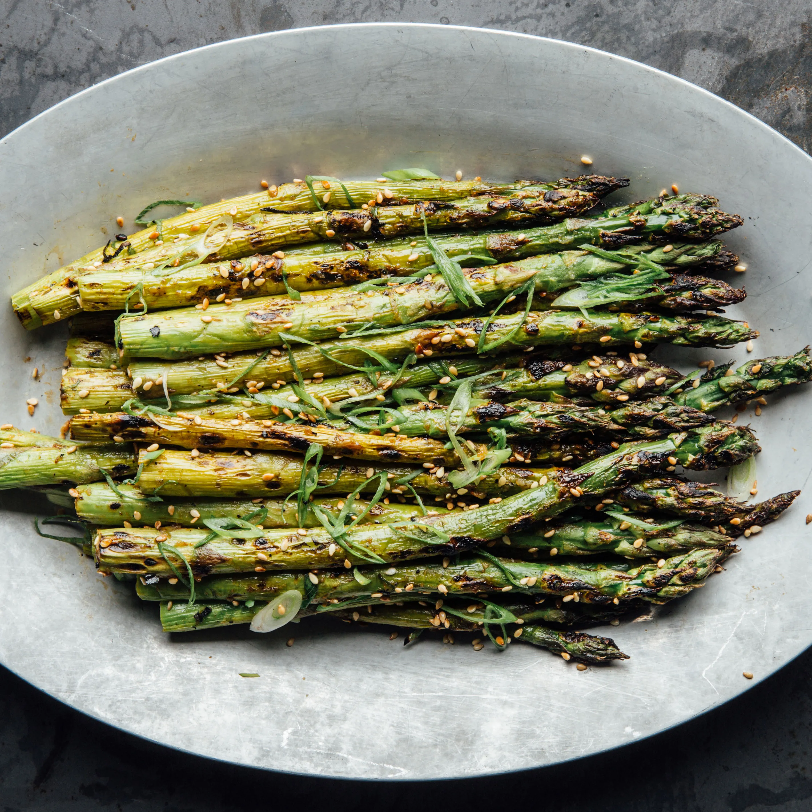

Grilled Asparagus

Grilled asparagus is simple to make, but it lets you enjoy the natural flavor of your veggies.
Ingredients
- 1 pound fresh asparagus spears, trimmed
- 1 tablespoon olive oil
- salt an pepper to tase
steps
- Preheat an outdoor grill for high heat and lightly oil the gate.
- Lightly coat the asparagus spears with olive oil. Season with salt and pepper to tase.
- Cook asparagus on the preheated grill, turning often until lightly charred and fork-tender about 3 to 5 minutes.